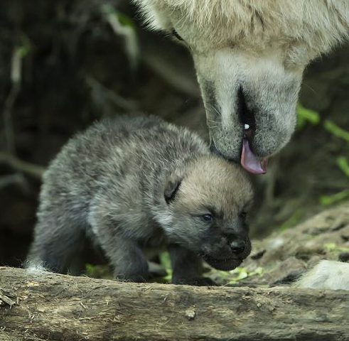

Arctic Wolf – Canis lupus arctos
No other wolf in the world can offer the same coloring as the Arctic Wolf. It is very
unique due to the location where it is found.
While some species of wolves do have
some white pelt, the Arctic Wolf one is almost completely white. They do offer some
aspects of yellow,
gray, and black in places though.
The overall size of them will depend on where they happen to live in their region.
Some of them only
weight about 75 pounds. Others though can weigh up to
125 pounds. Most of them are about 4-5 feet in length when they are fully grown.
Anotamy
Due to the severe enviroment in which the Arctic Wolves live in, they have 2 layers
of thick fur. The outer layer is water and
snow-proof which gets thicker as winter
comes. The inner layer helps insulate the cold. This allowes the Arctic Wolves contain
their heat in the bitter cold.
Arctic Wolves also have smaller ears than other wolves. This means that theres less
surface area to lose heat from compared to
the ears of other wolves. Since the ground
is always frozen, the wolves have fur on their paws to insulate them from the ice and
snow and
also provides a better grip on slippery surfaces.
Behavior
Arctic Wolves tend to stay in packs of at least 5 and up to 20. Generally, the size of the
pack will depend on how much food is available.
They are very territorial and will attack
any wolves that enters their territoy. These territories cover hundreds of miles which they
patrol every day.

Reproduction
Like most wolves, only the Alpha male will be allowed to mate with the beta female.
The pups are born a few months after mating. By then,
the female will already either
have digged or found a den where she can give birth. It's important that she has a place
where the pups
be born as she can have up to 12 pups to care for. They are around 1
pound each when they are born. The pups can't see or hear so they rely
upon instincts
and smells to survive for the first few months. When they are around 3 months old,
they will be able to join the pack with the
female.